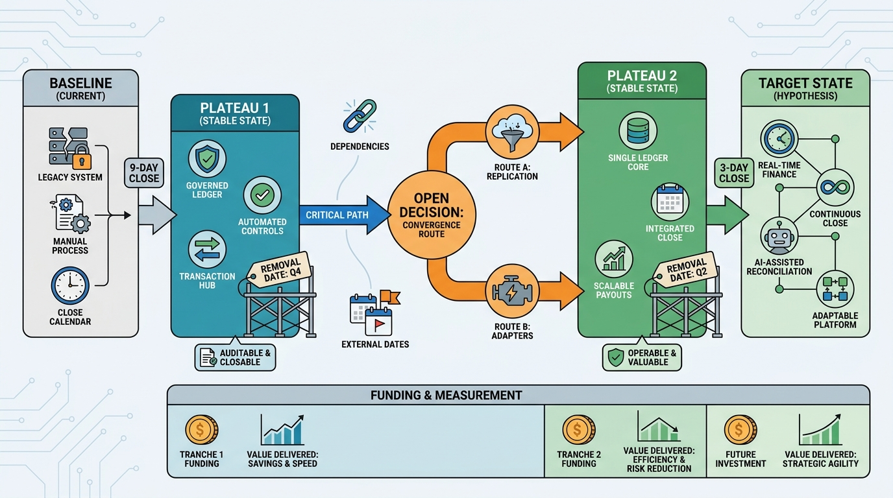

Part IV — LEAD: Strategic Architecture and Transformation
Target State, Transition States and the Roadmap

Image generated by Google Gemini (gemini-3-pro-image-preview)
Part IV — LEAD: Strategic Architecture and Transformation

Image generated by Google Gemini (gemini-3-pro-image-preview)